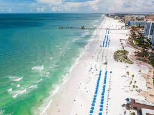
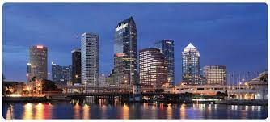
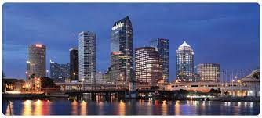

I am Zitong Li
This is my final project
About Me
Something a little more
These are something I like, what about you?
Abouth This Website
This website is to provide some guidence on vacation places during the outbreak of pandemic, to discover somewhere you may want to go but without too many tourists at local place.
My Frist Project
My original intention of creating this website was for my final project in this quarter. In this website, I will introduce you some locations based on the number of days spent on vacation. They are all in the United States and they are all very easy to reach the destination. And I hope you will like it...
💛 💛 💛
Punta Gorda, Florida
 

🔆 🔆 🔆
Another place to hide from winter,
But Florida has more than Miami and Orlando. Let me introduce you to the most beautiful fishing village in Florida, "Punta Gorda".
Punta Gorda is located in the south of Tampa, the third largest city in Florida. It is a small port town, very suitable for those who don't want to rush the trip. Spend three days here for a simple but pleasant warm winter.
Englewood Beach is the favorite beach of the locals. In this sea area, you can learn about the bay ecosystem, including mangrove estuary and seagrass beach, by playing water projects. You can also lie on the beach and sunbathe, or stop and go to enjoy the scenery.
The streets here are dotted with rows of royal palm trees. Going deep into the community, you can appreciate the early Florida architectural styles, such as iron roof houses and brick alleys, and experience the retro style of old Florida.
📅Recommended number of days to play: 2 to 3 days
Sedona, Arizona
🌵🌵🌵
Sedona is Arizona's magical tourist destination in winter! The average winter temperature here is about 14 degrees,
which is very comfortable and pleasant. Red rocky landscapes can be seen everywhere. For us who have lived in the city
for a long time, it is very visually impactful!
It is famous for its spiritual healing sacred place. There are multiple magnetic vortexes in the legendary area, which
hides "mysterious powers". It is very suitable for rehabilitation, meditation, and self-exploration. You can also find
psychic mediums to count a trigram for you, the strongest ones. Points are Airport Mesa, Boynton Canyon, Cathedral
Rock, Bell Rock
The local must-see attraction is the modern-style church Chapel of the Holy Cross, completed in 1957. It is located in
downtown Sedona. The shape can be said to be quite peculiar. It has once again refreshed the understanding of the
architectural style of the church!
Another must-check attraction is Bell Rock, which is one of the famous magnetic vortexes, which can be easily seen by
driving.
If you want to hike to learn more about the local red rock landscape, Devil’s Bridge Trail is recommended. This hike
is low in difficulty, and children can also hold it, but the journey is relatively long. It takes about 3 hours to go
back and forth 7.1 kilometers, but the scenery is definitely worth seeing!
📅Recommended number of days to play: 2 days and 1 night
Pahoa, Hawaii


island

🌅🌅🌅
Hawaii is definitely one of the top destinations for sheltering from the cold in winter. The average winter temperature is around 26 degrees Celsius. However, Oahu, Honolulu, and Maui are almost overcrowded every year-end holiday. , While the small town of Pahoa is much cleaner, without a large number of tourists, it is very suitable for a whole-hearted holiday.
Pahoa is located on the Big Island of Hawaii. It is known as a small town favored by the volcano goddess Pele, because it is away from one of the most active volcanoes in the world "Kilauea" The distance is less than 0.1 mile, attracting many geological enthusiasts to check in every year.
In Pahoa, you can almost enjoy the entire beach alone, snorkeling and swimming with tropical marine life, without having to grab the site with a large number of tourists.
Set foot in the tropical rainforest and breathe in the ultra-fresh air brought by the forest oxygen bar.
Go to the Main Street of Pahoa to admire the new Victorian architecture and experience the weird and novel collision of hippie culture and traditional Hawaiian culture.
📅Recommended number of days to play: 4 to 5 days
some paragraph in here if need, but need resize the width of the coloumn and how to put a back ground image???
Images Side by Side
How to create side-by-side images with the CSS float property: